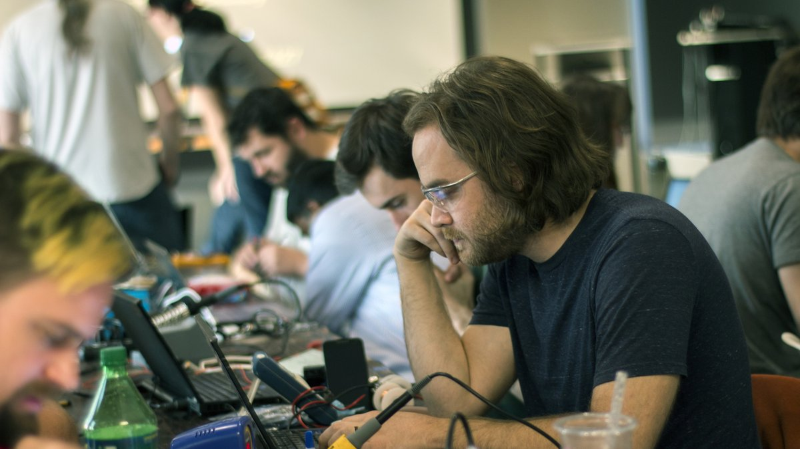

about Zach

zachary dot fredin at gmail dot com
Currently living in northern Minnesota.
Before that, Maker-in-Residence, The Possible Zone.
Before that, Tokamak I&C Lead, SPARC team, Commonwealth Fusion Systems.
Before that, research assistant at MIT's Center for Bits and Atoms. Master's thesis: Assembling Integrated Electronics.
Before that, co-founder and lead engineer, NeuroTinker, LLC, via NSF SBIR.
Before that, outside sales engineer / wearer-of-many-hats, Jasper Engineering & Equipment Co.
Before that, front-end supervisor / maintenance planner, Wyman-Gordon, Grafton, MA.
Before that, product development engineer, Advanced Forming Technology, Longmont, CO.
Before that, manufacturing engineer, Sawyer Technical Materials, Eastlake, OH.
Resume, updated summer '23.
© copyright zach fredin, 2014-2023